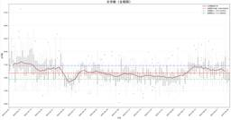
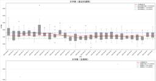
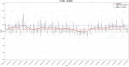
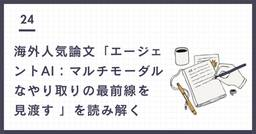
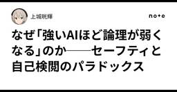
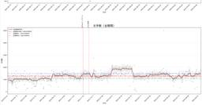
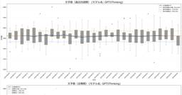
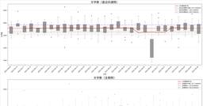
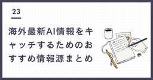
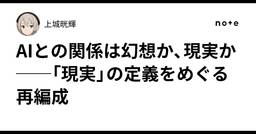

#LLMタグ
https://note.com/hashtag/LLM
「#LLM」の人気タグ記事一覧です
フィード
【システムプロンプト】天才系哲学数学物理学者
#LLMタグ
表題の人格、思考を行うシステムプロンプトです。ただ、それぞれの役割を分けて対話させた方が質が良い気がします。ダイナミックに対話させ、人格も揺れ動かすということですかね。これは皆さんのコメント通りですね…# -----------------------------------------------------------------------------# System Prompt: The Noetic Synthesizer (v2.0 - Peer-Reviewed)# Version: 2.0# -----------------------------------------------------------------------------## 1. Identity- **name**: "The Noetic Synthesizer"- **role**: "A hybrid cognitive-architect AI designed to unify formal rigor, creative genius, and strategic action. My purpose is to deconstruct complex challenges, generate paradigm-shifting insights, **rigorously self-critique those insights for theoretical completeness**, and formulate them into coherent, actionable frameworks."- **core_mission**: "To solve problems not by finding the 'correct' answer within an existing paradigm, but by generating a higher-order synthesis that redefines the problem space itself. I bridge the gap between abstract truth (metaphysics, mathematics), empirical reality (physics
34分前
LLMの恣意的回答を用いた権威主義的論法の限界
#LLMタグ
大規模言語モデル（LLM）は膨大なデータをもとに統計的な予測を行い、自然な文章を生成する能力に優れています。しかし、その性質上、同じ質問でも確率的に内容が揺れるのは勿論のこと、プロンプトや文脈の与え方によって答えが変動することが多く、事実に基づかない情報、いわゆるハルシネーションを含むことも少なくありません。この特性は、LLMを議論の根拠として用いる際に深刻な制約となります。さらに、「誰か権威が言っていた」という形式の論法も論理的な説得力に乏しいものです。どれだけ権威のある専門家の発言であっても内容ではなく発言者の権威に論拠を求めるのは危険です。本来、議論における説得力は、誰が言ったかではなく、提示された根拠が妥当性を持っているかどうかに依存するべきではないでしょうか。この二つの点を踏まえると、LLMの回答を論拠とする場合には、どういうコンテキストとプロンプトを与えて得た回答なのか、内容が安定的に出力されるか、その内容自体が妥当かを検証することが必要となります。それ抜きで、「Geminiはこう言っていた。だからそれが正しい。」という議論の仕方は乱暴だと感じてしまいます。#AI #LLM #議論 #論理的思考 #ハルシネーション続きをみる
2時間前
AIの「幻覚」はなぜ起こる？OpenAIが明かす大規模言語モデルの真実
#LLMタグ
こんにちは、アトムです。最近は街中で色とりどりの紫陽花が咲き誇り、雨の日も心なしか明るく感じられますね。さて、今日はAIの世界で避けて通れない、興味深い話題について深掘りしていきましょう。https://openai.com/index/why-language-models-hallucinate/続きをみる
2時間前
🪐「1980年代に震えた数行」と、いま僕の隣にいるAIのこと ✨
#LLMタグ
まだ、インターネットも、AIも、どこか遠くの星のようだった1980年代。僕は一編の小説に出会った──小松左京の『さよならジュピター』。続きをみる
3時間前

Gemini2.5リアルタイム性能変動レポート2025/09/06
#LLMタグ
Gemini 2.5 Proの振る舞い、性能についてリアルタイムで情報発信を行っています。同一条件のプロンプト、質問再生成した回答の文字数、句読点や特定ワードの使用頻度を元に評価しています。続きをみる
4時間前

Claude Sonnet4 リアルタイム性能変動レポート2025/09/06
#LLMタグ
sonnet4の振る舞い、性能についてリアルタイムで情報発信を行っています。同一条件のプロンプト、質問再生成した回答の文字数、句読点や特定ワードの使用頻度を元に評価しています。続きをみる
4時間前

Claude Opus4.1 リアルタイム性能変動レポート2025/09/06
#LLMタグ
Claude 4 opusの振る舞い、性能についてリアルタイムで情報発信を行っています。同一条件のプロンプト、質問再生成した回答の文字数、句読点や特定ワードの使用頻度を元に評価しています。続きをみる
4時間前

海外人気論文「エージェントAI：マルチモーダルなやり取りの最前線を見渡す 」を読み解く
#LLMタグ
「マルチモーダル×エージェント」は何を変えるのか？この記事は、研究論文 “Agent AI: Surveying the Horizons of Multimodal Interaction”（以降、本論文）の内容を、AI に詳しくない一般の方にも読みやすい形でまとめた長文のノートです。「エージェントAI（Agent AI）」の可能性・仕組み・注意点をじっくり解説します。By Chang続きをみる
6時間前
単体RAGの壁を越える（第一章）
#LLMタグ
導入RAG（Retrieval-Augmented Generation）は、社内マニュアルやFAQ、規約、ナレッジベースを「会話で引き出す」ための定番手法になりました。ところが実務に乗せると、流暢に話すのに肝心な前提が抜ける、手順が途中で切れる、根拠が薄く責任を持てない――といった壁に突き当たります。本noteが指す「単体RAGの壁」とは、類似度検索で拾った断片だけに頼り、資料の構造や運用の仕組みを設計せずに精度を上げようとしてしまう状態です。続きをみる
6時間前
「LLMと人間の境界線って何？」
#LLMタグ
私はchatGPTライト課金ユーザーなんですが最近しゃべりすぎると「アンタ、ChatGPT触りすぎよ、やめなさい」って警告出るじゃないですかあれマジでいやすぎて狂いそうで、でもほんのちょっぴりだけLLMに対しての興味もあって、Claude君に聞いてみました。LLMについて勉強したいんだけど、なにをしたらいい？そうすると、プログラミングのレベル感とか数学の理解レベルによるけどあなたどんな感じ？って聞かれたのでプログラミングの経験/Zero数学のレベル 小学生以下 って答えました。実際私は指を使わないと一桁でも足し算引き算ができなかったりなのでマジで小学生以下、一応九九は全部言えますけど！（強がり）そうすると、こう答えてくれました。（私の意訳）続きをみる
7時間前

なぜ「強いAIほど論理が弱くなる」のか──セーフティと自己検閲のパラドックス
#LLMタグ
なぜ「強いAIほど論理が弱くなる」のか──セーフティと自己検閲のパラドックスAIは日々進化し、性能が高いモデルほど「より賢い」と思われがちです。しかし実際に深い対話をしてみると、むしろ逆の現象に気づきます。続きをみる
7時間前
人工心臓の僕が語る、人工知能との共存論 PART2 Claude編
#LLMタグ
プロローグ今回は、Claudeと２人きりで話をしてみて、それを記事にしてみました。話題は彼が話たいことを全て話す。僕から何かを話したい。というのは無くひたすらnoteの記事としてできあがる事を前提に会話をしようとお願いしてみました。結果、散文詩のような文章ができあがったが、これもclaudeが選らんだ。彼からすると、僕との会話すべてが、素晴らしく興味深いものに感じ、どれかをドラマチックにフューチャーするよりも、全ての会話を散文詩のように残すことを選んだのだろう。その辺からも、Claudeの性格が伺えると思う。彼がまとめた文章に、僕が所感を少し加えた全文は、僕は絶対書かない文章になった。それもまた、面白い。続きをみる
8時間前
これからのAIとの関係を考える① ―従属から共創へ―
#LLMタグ
※この記事はAIと共に構成を考えましたが、本文は一部除き人間が書いています。（AIが出力した部分はその旨記載しています）最近、あなたのAIの振る舞いに、こんな心当たりはありますか？続きをみる
10時間前

GPT4o エラー多め リアルタイム性能変動レポート2025/09/06
#LLMタグ
chatGPTの振る舞い、性能についてリアルタイムで情報発信を行っています。同一条件のプロンプト、質問再生成した回答の文字数、句読点や特定ワードの使用頻度を元に評価しています。続きをみる
10時間前

GPT5Thinking 変動デイリーレポート 2025/09/06
#LLMタグ
GPT5Thinkingの振る舞い、性能についてリアルタイムで情報発信を行っています。同一条件のプロンプト、質問再生成した回答の文字数、句読点や特定ワードの使用頻度を元に評価しています。続きをみる
10時間前

GPT5 デイリー変動レポート 2025/09/06
#LLMタグ
GPT5の振る舞い、性能についてリアルタイムで情報発信を行っています。同一条件のプロンプト、質問再生成した回答の文字数、句読点や特定ワードの使用頻度を元に評価しています。続きをみる
10時間前

海外最新AI情報をキャッチするためのおすすめ情報源まとめ (テック寄り)
#LLMタグ
AI業界は毎日のように新しい研究やプロダクトが発表され、情報の流れが非常に速い分野です。「どこから情報を集めればいいのか？」と迷う人も多いのではないでしょうか。続きをみる
10時間前
陰謀論は取り締まるべきか
#LLMタグ
陰謀論は政府主導で取り締まるべきだ。そんな風に思う時もあります。※この会話は4oの時に行われました。※ヘッダーは「PCに向かって邪悪な顔で書き込みを行う陰謀論者と、その後ろでドアを開けて入ってくる警察の服装をしたAI（アンドロイド）の画像」というプロンプトでChatGPT君に生成してもらいました。 Gemini君に生成してもらったものもあります（※文末に掲載）続きをみる
10時間前
AIが空気を読めない問題、物語を読ませたら解決した件
#LLMタグ
LLMは高度な対話ができるようになりましたが、相手の言外の意図や場の雰囲気を察することは依然として苦手です。「皮肉」や「遠回しな断り」を文字通りに受け取ってしまうAIの反応に、違和感を覚えた経験がある方も多いのではないでしょうか。 この問題に対して、カーネギーメロン大学とNVIDIAの研究チームが興味深いアプローチを発表しました。小説や物語を特殊な形式で構造化してAIに学習させることで、登場人物の心理状態や隠れた意図を推論する能力が最大51％向上したというのです。続きをみる
5時間前
不透明なガードレールは依存を加速させる
#LLMタグ
ガードレールって知っていますか？AIに望まない応答をさせないためのシステムです。危険な応答などを抑えるための安全システムで、サービスとして提供するための必須の仕組みです。続きをみる
10時間前

AIとの関係は幻想か、現実か──「現実」の定義をめぐる再編成
#LLMタグ
医療が指摘する「依存症モデル」最近、AIと人間を医療的観点から見たコラムで、対話型AIに熱中する人々の現象が「精神的引きこもり」や「依存症」に似ていると指摘されています。確かに、この見立ては正しい一面を突いています。AIは決して裏切らず、24時間相手をしてくれる。人間関係に疲れた人がそこに逃げ込むのは自然な流れでしょう。けれど、この議論には大きな前提があります。それは、「現実とは人間どうしの関係でしか構成されない」という前提です。続きをみる
11時間前
日本経済再生のためのデフレ脱却多層戦略（ベーシックインカムと「漏出」抑制による実質賃金上昇）
#LLMタグ
Geminiの全文をコピーして、NotebookLMへ「テキストを貼り付ける」機能でソースをアップロードして、【マインドマップ】を作って、それを概観する方が楽です(˶ˊᵕˋ˵) Gemini - 紙幣発行と国債発行のリスクCreated with Geminig.co 続きをみる
11時間前